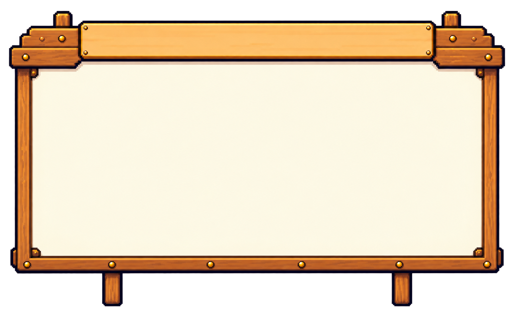
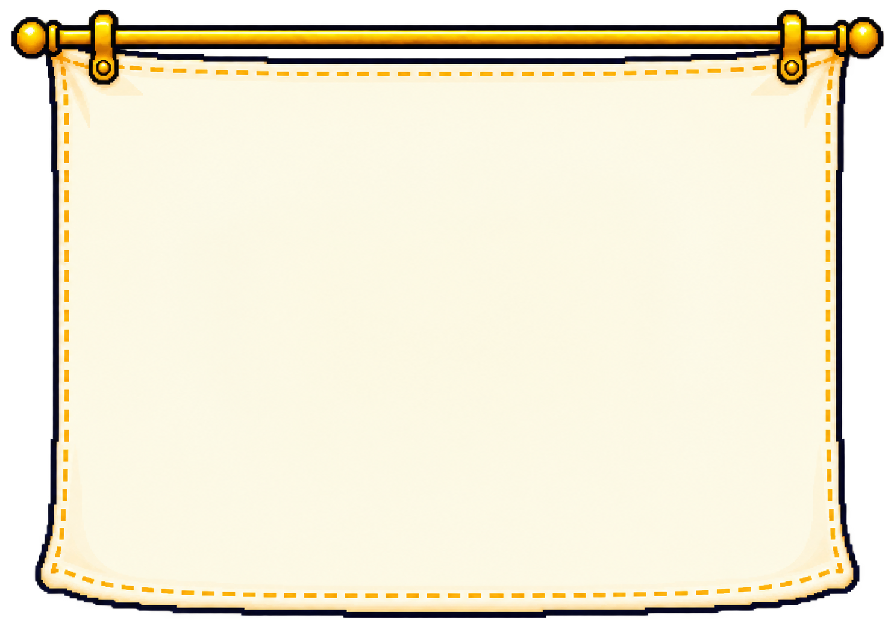

1. Inspect
and prepare
- Explore real datasets: Seoul Bike, Palmer Penguins and Wine Quality.
- Understand rows, columns and units.
- Check missing values and cleaning choices.


A question, a table, an answer you can check
Learn Python by exploring real datasets
and evaluating models.